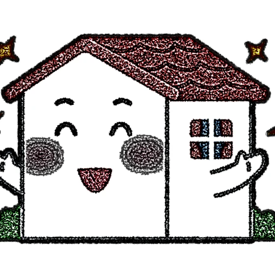
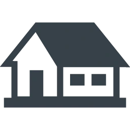
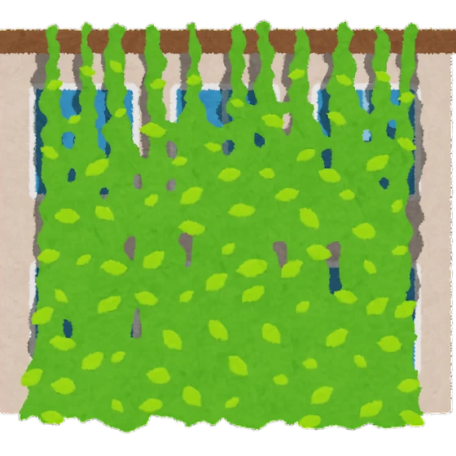
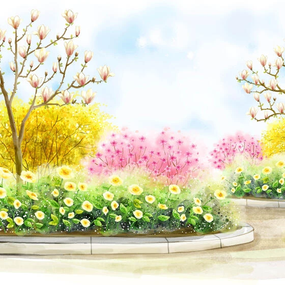
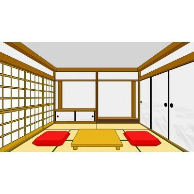
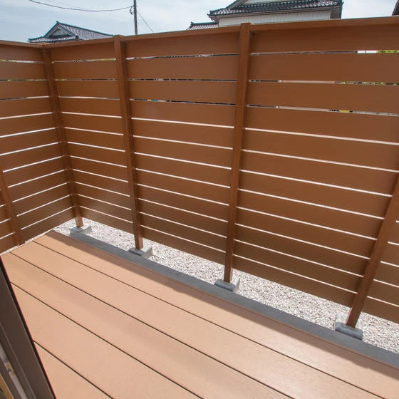
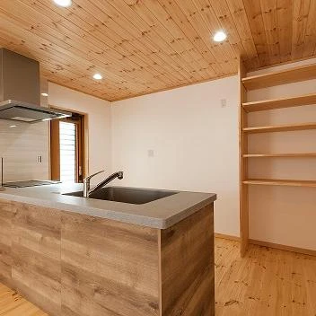
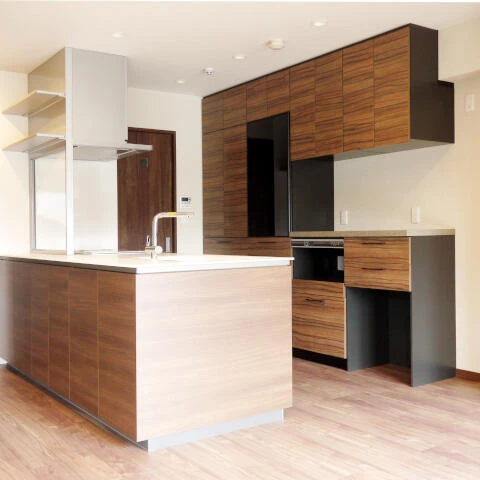

生活デザイン①
こんにちは✨ 富山県高岡市で自然素材の家づくりをしている 「フジ創アイノス」です。 生活デザインについて、、 何部か分けて更新していきます。。 暮らしの歴史が宿る家・・ ・生活感のない家・ ときいてあまりよくない言葉とか
続きを読む →FUJISOU AINOS JOURNAL
家づくりのこと、暮らしのこと。
日々の想いを、お伝えします。
新しい記事から 7・40ページ

こんにちは✨ 富山県高岡市で自然素材の家づくりをしている 「フジ創アイノス」です。 生活デザインについて、、 何部か分けて更新していきます。。 暮らしの歴史が宿る家・・ ・生活感のない家・ ときいてあまりよくない言葉とか
続きを読む →こんにちは✨ 富山県で自然素材の家づくりをしている 「フジ創アイノス」です。 今日も更新していきます✨ ☆テーマ☆ ・アルミニウム製と、木製のサッシ・ 家を新築したり、リフォームしたりするときに。ごく普通に使われているの
続きを読む →
こんにちは✨ 富山県で自然素材の家づくりをしている 「フジ創アイノス」です。 テーマ☆ ・サスティナブルデザイン。 インテリアデザインは、アメリカでも流行があります。 近年になって評価が高いのは、歴史を感じさせるデザイン
続きを読む →こんにちは✨ 富山県で自然素材の家づくりをしている 「フジ創アイノス」です。 テーマ 「木を大切に使おう」です。 ・樹木の口はどこにあるのかしっていますか？ あんなに大きく育つためには、、たくさん食べて養分を取り込まない
続きを読む →こんにちは✨ 富山県で自然素材の家づくりをしている 「フジ創アイノス」です。 今日は、ちょっとしたコラムを更新していきます。 ・日本古来の家づくりは、大きくは三つの職種に支えられていました。 大工と左官と建具です。 墨掛
続きを読む →こんにちは✨ 富山県で自然素材の家づくりをしている 「フジ創アイノス」です。 鉄よりも強い木の続きを更新していきます。 テーマ 「強さをはかる２つの力」 ・材料の強さを比較するには、力の方向による２つの強度があります。
続きを読む →こんにちは✨ 富山県で自然素材の家づくりをしている 「フジ創アイノス」です。 空間の役割シリーズ テーマ ・家族の作戦指令室・ 同じように、寝ることができて、充分に収納があれば良いと主寝室については考えがちです。 しかし
続きを読む →
こんにちは✨ 富山県で自然素材の家づくりをしている 「フジ創アイノス」です。 今日は、テーマを変えて更新していきます。。 テーマ ・ガーデンで「涼」を得よう・ 樹木は、庭の骨格を担い、空間に奥行きや立体感を作り出す大切な
続きを読む →こんにちは。 富山県で自然素材の家づくりをしている 「フジ創アイノス」です。 今日も危険な事故についてご紹介いたします。 テーマ ・家庭内の事故・ 溺水の以外の死亡原因は、、家庭内事故はどうなっているのか。。 不慮の事故
続きを読む →こんにちは。 富山県で自然素材の家づくりをしている 「フジ創アイノス」です。 テーマ ・家の中の危険な場所・ 溺水による不慮の事故がニュースで流れるときは、プール、河川でのケースがほとんどです。 家の中で起きている溺水事
続きを読む →こんにちは。 富山県高岡市で自然素材の家づくりをしている 「フジ創アイノス」です。 今日は、どの家も心配になることをご紹介していきます。 テーマ 「 いのちを守る家 」です。 その中の気になる記事があったので、こちらにご
続きを読む →こんにちは。 富山県で自然素材の家づくりをしている 「フジ創アイノス」です。 今日は、 わたしが気になる記事をあげていきたいと思います。 「旬」の夏野菜です。。 テーマ ・「旬」の夏野菜を味わおう。 夏に旬を迎える野菜と
続きを読む →
こんにちは✨ 富山県で自然素材の家づくりをしている 「フジ創アイノス」です。 今日は、庭の芸術療法のことについて、 更新していきます。 まずは、高齢化社会を迎えて、これからのガーデンの役割というのは。。 医療の発展、福祉
続きを読む →こんにちは。 富山県で自然素材の家づくりをしている 「フジ創アイノス」です。 今日は、空間の役割②を紹介していきます。 ダイニングという言葉を使っていきます。 ・ダイニングについて✨ ダイニングに家族力が表れます✨ リビ
続きを読む →
こんにちは。 富山県で自然素材の家づくりをしている 「フジ創アイノス」です。 今日は、、 余裕があればほしい和室があるという人もいますね。 和室わたしも欲しいです✨ ・日本人にとって和室は、あこがれの空間。 できれば欲し
続きを読む →こんにちは✨ 富山県で自然素材の家づくりをしている 「フジ創アイノス」です。 今日は、バラの魅力をお伝えいたします。 ・系統からバラの魅力 ・バラ科バラ属の学名は、、ＲＯＳＥ。 現在、園芸品種は、約２万品種を超えると言わ
続きを読む →こんにちは 富山県で自然素材の家づくりをしている 「フジ創アイノス」です。 今日は、庭づくりに関係するコラムを更新していきます✨ 皆さん、お花の名前を知っていますか？ 今日、ご紹介いたしますのは「 クレマチス 」という
続きを読む →こんにちは✨ 富山県で自然素材の家づくりをしている 「フジ創アイノス」です。 植物たちについて更新していきます✨ テーマ 「縁側」という言葉で書いていきます。 ・縁側の植物・ 日本の建物に、縁側という場所があります。 縁
続きを読む →こんにちは✨ 富山県で自然素材の家づくりをしている [フジ創アイノス]です。 暑い月がやってきました、、 夏はとても暑くて、耐えれません、、。 この時期、１番気をつけること。 それは、、 熱中症という言葉。 そのためには
続きを読む →
こんにちは✨ 富山県で自然素材の家づくりをしている 「フジ創アイノス」です。 今月のコラムシリーズを更新していきます✨ 私が気になるシリーズをご紹介✨ 気になるのは、(ビオガーデン)という言葉。 ビオガーデンなので、庭。
続きを読む →こんにちは。 富山県で自然素材の家づくりをしている 「フジ創アイノス」です。 お久しぶりに更新いたします。 皆さん、気温差で体調崩してませんか？ 体調管理を大切にしましょう。 そろそろ1番嫌な時期がきますね。。 その正体
続きを読む →こんにちは。 富山県で自然素材の家づくりをしている 「フジ創アイノス」です。 2023年３月に３軒見学行ってきました。 まだまだ物件見学行く予定です。いっぱいいきたいと思います。 それを発信していきたいです。 個人的な感
続きを読む →
こんにちは。富山で自然素材にこだわるホンモノの家、フジ創アイノスです。 4月29日（土）、30日（日）の2日間、5月3日(水・祝)～７日(日)射水市で完成見学会を開催します。 完成したばかりの新築一戸建て住宅を、お施主様
続きを読む →
こんにちは 富山県で自然素材にこだわった家づくりをしている 「フジ創アイノス」です。 いつもありがとうございます。 キッチンクリーニングの費用相場について、、 １，全体的に掃除をした場合 ・キッチンを全体的に掃除した場合
続きを読む →